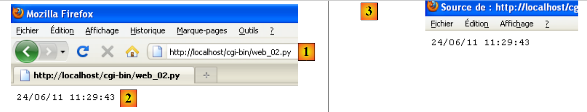
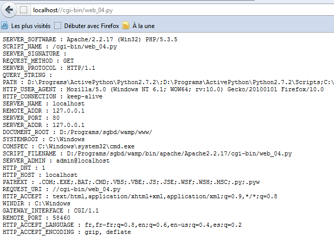

12. خدمات الويب بلغة Python
 |
يمكن تنفيذ البرامج النصية بلغة Python بواسطة خادم WEB. وهذا الخادم هو الذي سيتولى استقبال طلبات العملاء. من وجهة نظر العميل، فإن استدعاء خدمة WEB يعادل طلب URL لتلك الخدمة. يمكن كتابة برنامج العميل بأي لغة برمجة، ولا سيما لغة Python. يتعين علينا أن نكون قادرين على «التواصل» مع خدمة WEB، أي فهم بروتوكول Http للاتصال بين خادم الويب وعملائه. وهذا هو الهدف من البرامج التالية.
سيتم تنفيذ نصوص خدمة الويب بواسطة خادم الويب Apache الخاص بـ WampServer. يجب وضعها في دليل معين: <WampServer>\bin\apache\apachex.y.z\cgi-bin حيث <WampServer> هو مجلد تثبيت WampServer و x.y.z هو إصدار خادم الويب Apache.
 |
لا يكفي وضع نصوص Python في المجلد <cgi-bin>. بل يجب أن تشير النصّة في السطر الأول إلى مسار مترجم Python المطلوب استخدامه. ويُكتب هذا المسار في شكل تعليق:
على القارئ تكييف هذا المسار مع بيئته الخاصة.
12.1. تطبيق عميل/خادم للتاريخ/الوقت
ستكون أول خدمة ويب لدينا هي خدمة التاريخ والوقت: يتلقى العميل التاريخ والوقت الحاليين.
12.1.1. الخادم
#!D:\Programs\ActivePython\Python2.7.2\python.exe
import time
# رؤوس
print "Content-Type: text/plain\n"
# إرسال الوقت إلى العميل
# التوقيت المحلي: عدد الميلي ثانية منذ 01/01/1970
# "تنسيق عرض التاريخ والوقت
# d: اليوم برقمين
# m: الشهر برقمين
# y: السنة برقمين
# H: الساعة 0,23
# M: الدقائق
# S: الثواني
print time.strftime('%d/%m/%y %H:%M:%S',time.localtime())
ملاحظات:
- السطر 6: يجب أن يقوم البرنامج النصي بنفسه بإنشاء بعض رؤوس HTTP الخاصة بالاستجابة الموجهة إلى العميل. وستُضاف هذه الرؤوس إلى رؤوس HTTP التي ينشئها خادم Apache نفسه. تشير رأس HTTP في السطر 6 إلى العميل بأنه سيتم إرسال مورد إليه بتنسيق text/plain، أي نص غير منسق. تجدر الإشارة إلى الرمز "\n" في نهاية الرأس، والذي سيؤدي إلى إنشاء سطر فارغ بعد الرأس. وهذا أمر إلزامي: فهذا السطر الفارغ هو الذي يُشير إلى عميل HTTP بنهاية رؤوس HTTP الخاصة بالاستجابة. ثم يأتي بعد ذلك المورد الذي طلبه العميل، وهو في هذه الحالة نص غير منسق؛
- السطر 18: المورد المرسل إلى العميل هو نص يعرض التاريخ والوقت الحاليين.
12.1.2. اختباران
يمكن تنفيذ البرنامج النصي السابق مباشرةً بواسطة مترجم Python في نافذة الأوامر كما فعلنا حتى الآن. وهذا يتيح استبعاد أي أخطاء محتملة في الصياغة أو التشغيل. ونحصل على النتيجة التالية:
بعد اختبار البرنامج النصي بهذه الطريقة، يمكن وضعه في المجلد <cgi-bin> على خادم Apache (انظر الفقرة 12). لنقم بتشغيل التطبيق WampServer. يؤدي ذلك إلى تشغيل كل من خادم الويب Apache ونظام إدارة قواعد البيانات MySQL في آن واحد. لن نستخدم في الوقت الحالي سوى خادم الويب. ثم، باستخدام متصفح، دعونا نطلب الصفحة التالية: http://localhost/cgi-bin/web_02.py:
 |
- في [1]: الـ URL المطلوب؛
- إلى [2]: الرد المعروض بواسطة المتصفح؛
- في [3]: شفرة المصدر التي استلمها متصفح الويب. وهي بالفعل تلك التي أرسلها البرنامج النصي Python.
باستخدام بعض الأدوات (هنا Firebug، وهو مكون إضافي لمتصفح Firefox) يمكن الوصول إلى رؤوس HTTP المتبادلة مع الخادم. في المثال أعلاه، تلقى متصفح الويب رؤوس HTTP التالية:
يمكن التعرف في السطرين 7 و8 على رأس HTTP الذي أرسله البرنامج النصي Python. أما الرؤوس التي تسبقها فقد تم إنشاؤها بواسطة خادم الويب Apache.
12.1.3. عميل مبرمج
سنقوم الآن بكتابة برنامج نصي سيكون عميلاً للخدمة الويب السابقة. نستخدم ميزات الوحدة النمطية httplib التي تسهل كتابة عملاء HTTP.
# -*- coding=utf-8 -*-
import httplib,re
# الثوابت
HOST="localhost"
URL="/cgi-bin/web_02.py"
# الاتصال
connexion=httplib.HTTPConnection(HOST)
# المتابعة
connexion.set_debuglevel(1)
# إرسال الطلب
connexion.request("GET", URL)
# معالجة الرد
reponse=connexion.getresponse()
# المحتوى
contenu=reponse.read()
# إغلاق الاتصال
connexion.close()
print "------\n",contenu,"-----\n"
# استرداد عناصر الوقت
elements=re.match(r"^(\d\d)/(\d\d)/(\d\d) (\d\d):(\d\d):(\d\d)\s*$",contenu).groups()
print "Jour=%s,Mois=%s,An=%s,Heures=%s,Minutes=%s,Secondes=%s" % (elements[0],elements[1],elements[2],elements[3],elements[4],elements[5])
ملاحظات:
- السطر 3: الوحدة النمطية re ضرورية للتعبيرات العادية، والوحدة النمطية httplib ضرورية لوظائف عملاء HTTP؛
- السطر 9: يتم إنشاء اتصال HTTP مع المنفذ 80 الخاص بـ HOST المحدد في السطر 6؛
- السطر 11: يتيح التتبع رؤية رؤوس HTTP لطلب العميل واستجابة الخادم؛
- السطر 13: يتم طلب URL من خدمة الويب. هناك طريقتان لطلبها: باستخدام أمر HTTP GET أو POST. سيتم شرح الفرق بينهما لاحقًا. هنا سيتم طلبها باستخدام أمر HTTP GET؛
- السطر 15: تتم قراءة استجابة الخادم. يتم هنا الحصول على الاستجابة بالكامل: رؤوس Http والمورد الذي طلبه العميل. في استجابته، قد يطلب الخادم من العميل إعادة التوجيه. في هذه الحالة، يقوم العميل httplib بإجراء إعادة التوجيه تلقائيًا. وبالتالي، فإن الاستجابة التي تم الحصول عليها هي تلك الناتجة عن إعادة التوجيه؛
- السطر 17: تتكون الاستجابة من رؤوس HTTP والمستند الذي طلبه العميل. للحصول على رؤوس HTTP فقط، نستخدم [reponse].getHeaders(). وللحصول على المستند، نستخدم [reponse].read()؛
- السطر 19: بمجرد الحصول على الرد من خادم الويب، يتم إغلاق الاتصال به؛
- نعلم أن المستند المرسل من الخادم عبارة عن سطر نصي بالصيغة 15/06/11 14:56:36. في الأسطر 22-26، نستخدم تعبيرًا منتظمًا لاستخراج العناصر المختلفة من هذا السطر.
12.1.4. النتائج
ملاحظات:
- السطر 1: رؤوس Http المرسلة من العميل إلى خادم الويب؛
- الأسطر 2-6: رؤوس HTTP الخاصة باستجابة خادم الويب؛
- السطر 8: المستند الذي أرسله الخادم؛
- السطر 11: نتيجة معالجته؛
12.2. استرداد الخادم للمعلمات المرسلة من العميل
في بروتوكول HTTP، يتوفر للعميل طريقتان لتمرير المعلمات إلى خادم الويب:
- يطلب URL من الخدمة بالصيغة
GET url?param1=val1¶m2=val2¶m3=val3… HTTP/1.0
حيث يجب أن تخضع القيم vali مسبقًا لعملية ترميز بحيث يتم استبدال بعض الأحرف المحجوزة بقيمتها السداسية العشرية.
- يطلب معرف الخدمة URL بالصيغة
ثم يضع الرأس التالي ضمن رؤوس HTTP المرسلة إلى الخادم:
تنتهي العناوين التالية التي يرسلها العميل بسطر فارغ. ويمكنه عندئذٍ إرسال بياناته بالشكل التالي
حيث يجب ترميز vali مسبقًا، كما هو الحال مع الطريقة GET. يجب أن يكون عدد الأحرف المرسلة إلى الخادم هو N، حيث N هي القيمة المعلنة في الرأس:
12.2.1. خدمة الويب
تتلقى خدمة الويب التالية 3 معلمات من عميلها: nom، prenom، age. وتقوم باستردادها من نوع من القاموس يُسمى cgi.FieldStorage والذي توفره الوحدة النمطية cgi. يتم الحصول على القيمة vali لمعلمة parami بواسطة vali=cgi.FieldStorage().getlist("parami"). ونحصل على مصفوفة من:
- 0 عنصر إذا لم يكن المعلمة parami موجودة في طلب العميل؛
- عنصر واحد إذا كان المعلمة parami موجودة مرة واحدة في طلب العميل؛
- n عنصرًا إذا كان المعلمة parami موجودة n مرة في طلب العميل.
بمجرد استرداد المعلمات، يقوم البرنامج النصي بإرسالها إلى العميل.
#!D:\Programs\ActivePython\Python2.7.2\python.exe
import cgi
# رؤوس الرسائل
print "Content-Type: text/plain\n"
# استرداد الخادم للمعلومات المرسلة من العميل
# هنا الاسم الأول=P&الاسم الأخير=N&العمر=A
formulaire=cgi.FieldStorage()
# يتم إرسالها إلى العميل
print "informations recues du service web [prenom=%s,nom=%s,age=%s]" % (formulaire.getlist("prenom"),formulaire.getlist("nom"),formulaire.getlist("age"))
يمكن إجراء اختبار باستخدام متصفح ويب:
 |
في [1]، يظهر URL الخاص بخدمة الويب. تجدر الإشارة إلى وجود المعلمات الثلاثة nom وprenom وage. في [2]، رد خدمة الويب.
12.2.2. العميل GET
# -*- coding=utf-8 -*-
import httplib,urllib
# الثوابت
HOST="localhost"
URL="/cgi-bin/web_03.py"
PRENOM="Jean-Paul"
NOM="de la Huche"
AGE=42
# يجب ترميز المعلمات قبل إرسالها إلى الخادم
params = urllib.urlencode({'nom': NOM, 'prenom': PRENOM, 'age': AGE})
# توضع المعلمات في نهاية URL
URL+="?"+params
# الاتصال
connexion=httplib.HTTPConnection(HOST)
# التتبع
connexion.set_debuglevel(1)
# إرسال الطلب
connexion.request("GET",URL)
# معالجة الرد
reponse=connexion.getresponse()
# المحتوى
contenu=reponse.read()
print contenu,"\n"
# إغلاق الاتصال
connexion.close()
ملاحظات:
- الأسطر 8-10: قيم المعلمات الثلاثة المرسلة إلى خدمة الويب؛
- السطر 13: يجب ترميزها. ويتم ذلك باستخدام الطريقة urlencode في الوحدة النمطية urllib. يتم استيراد هذه الوحدة النمطية في السطر 3. تقبل هذه الطريقة كمعلمة قاموسًا {param1:val1, param2:val2, ...}؛
- السطر 15: في الأمر GET (السطر 21)، يجب على العميل وضع المعلمات المشفرة في نهاية الأمر URL الخاص بخدمة الويب؛
- وقد تمت مناقشة الأسطر التالية سابقًا.
12.2.3. النتائج
ملاحظات:
- السطر 2: لاحظ ترميز المعلمات (الاسم، الاسم الأول، العمر)؛
- السطر 8: استجابة خدمة الويب.
12.2.4. العميل POST
العميل POST مشابه للعميل GET باستثناء أن المعلمات المشفرة لم تعد جزءًا من الهدف URL. وقد تم تمريرها كحجة ثالثة في الطلب POST (السطر 19).
# -*- coding=utf-8 -*-
import httplib,urllib
# الثوابت
HOST="localhost"
URL="/cgi-bin/web_03.py"
PRENOM="Jean-Paul"
NOM="de la Huche"
AGE=42
# يجب ترميز المعلمات قبل إرسالها إلى الخادم
params = urllib.urlencode({'nom': NOM, 'prenom': PRENOM, 'age': AGE})
# الاتصال
connexion=httplib.HTTPConnection(HOST)
# المتابعة
connexion.set_debuglevel(1)
# إرسال الطلب
connexion.request("POST",URL,params)
# معالجة الرد
reponse=connexion.getresponse()
# المحتوى
contenu=reponse.read()
print contenu,"\n"
# إغلاق الاتصال
connexion.close()
12.2.5. النتائج
ملاحظات:
- يُلاحظ في السطر 2 الطريقة التي يستخدمها العميل POST لإرسال المعلمات المشفرة:
- تشير رأس Http Content-Length إلى عدد الأحرف التي سيتم إرسالها إلى خدمة الويب؛
- ويلي رأس Http هذا سطر فارغ يشير إلى نهاية رؤوس Http؛
- ثم يتم إرسال الأحرف الـ 39 الخاصة بالمعلمات المشفرة.
- السطر 8: استجابة خدمة الويب.
12.3. استرداد متغيرات البيئة من خدمة ويب
12.3.1. خدمة الويب
يتم تنفيذ البرنامج النصي CGI بلغة Python في بيئة نظام تحتوي على سمات. تتوفر هذه السمات وقيمها في قاموس os.environ.
#!D:\Programs\ActivePython\Python2.7.2\python.exe
import os
# رؤوس
print "Content-Type: text/plain\n"
# معلومات البيئة
for (cle,valeur) in os.environ.items():
print "%s : %s" % (cle,valeur)
ملاحظات:
- السطر 3: يجب استيراد الوحدة النمطية os للحصول على متغيرات «النظام».
إذا تم تنفيذ البرنامج النصي أعلاه مباشرةً (c.a.d. كبرنامج نصي في وحدة التحكم وليس كبرنامج CGI)، فسنحصل على النتائج التالية في وحدة التحكم:
في متصفح الويب (حيث يتم عندئذٍ تنفيذ البرنامج النصي cgi)، نحصل على النتائج التالية:
 |
تجدر الإشارة إلى أن البيئة الناتجة تختلف باختلاف سياق التنفيذ.
12.3.2. البرنامج العميل
# -*- coding=utf-8 -*-
import httplib
# الثوابت
HOST="localhost"
URL="/cgi-bin/web_04.py"
# الاتصال
connexion=httplib.HTTPConnection(HOST)
# إرسال الطلب
connexion.request("GET", URL)
# معالجة الرد
reponse=connexion.getresponse()
# المحتوى
print reponse.read()
12.3.3. النتائج
تجدر الإشارة إلى أن العميل المبرمج لا يتلقى نفس الرد الذي يتلقاه متصفح الويب بالضبط. ويرجع ذلك إلى أن متصفح الويب أرسل إلى خادم الويب معلومات استخدمها الخادم لإنشاء رده. أما العميل المبرمج، فلم يرسل أي معلومات عن نفسه.